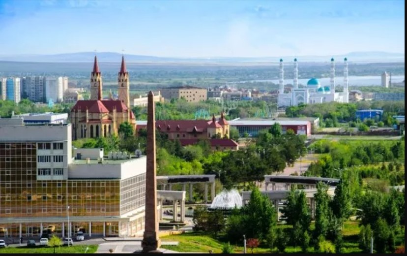

Karaganda
Karaganda or Qaraghandy is the capital of Karaganda Region in the Republic of Kazakhstan. It is the fourth most populous city in Kazakhstan, behind Almaty, Nur-Sultan and Shymkent. Population: 497,777. Karaganda is approximately 230 km south-east of Kazakhstan's capital Nur-Sultan (formerly known as Astana).
In the 1940s up to 70% of the city's inhabitants were ethnic Germans. Most of the ethnic Germans were Soviet Volga Germans who were collectively deported to Siberia and Kazakhstan on Stalin's order when Hitler invaded the Soviet Union in 1941. Until the 1950s, many of these deportees were interned in labor camps, often simply because they were of German descent. The population of Karaganda fell by 14% from 1989 to 1999 following the dissolution of the Soviet Union; it was once Kazakhstan's second-largest city after Almaty. Over 100,000 people have since emigrated to Germany. There is also a concentration of ethnic Poles in the city.
If you want to see more information, visit the following pages:
History
Popular Figures
More information
